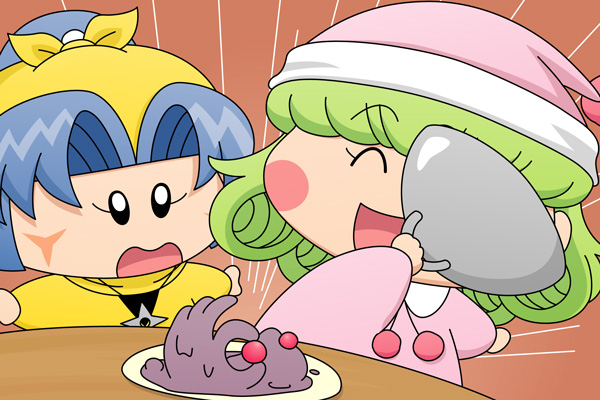

リルムは自分の家まで訪ねてきてくれたヤマネの手を握り、答えました。
リルム「ヤマネさんの苦労もよく分かりますわ。
ミルモ様もそうですが、男性は恋に素直ではありませんから」
ヤマネ「やはり私には無理なのでしょうか・・・」
リルム「いいえ、ここはヤマネさんのがんばりどころですわ。
そうですわね・・・ヤシチさんは家庭的な女性が
必要なのではないかしら？」
ヤマネ「家庭的でございますか？」
リルム「ヤシチさんはいつも仲間を大切にする、それは家族みたいなものですわ。
家族に必要なのは・・・そうですわね、
一度お料理を作ってさしあげては？」
ヤマネ「お料理でしたら私もたまに作って持って行っているでございます」
リルム「普通の料理ではいけませんわ。
もっとこう暖かくて刺激的で個性的で愛があって、
そしてヤシチさんもびっくりするような料理でなくては
ヤシチさんもきっと振り向いてくださらないと思いますの」
ヤマネ「そういうものなのでございましょうか」
リルム「ええ。
ミルモ様もわたくしの料理に対してはいつも特別な反応を
示してくださいますし」
ヤマネ「左様でございますか」
自分で言って顔を赤くするリルムを見て、曇っていたヤマネの表情がぱーっと明るくなっていきました。
（注：ヤマネはリルムの料理を知らないという設定で）
リルム「そうと決まればわたくしがお手本を見せて差し上げますから
ヤマネさんはお部屋でしばらくお待ちくださいませ」
リルムは笑顔満面で台所へと消えていきました。
途中リルムの「どりゃーっ」というかけ声やドカーンという何かが爆発するような音に多少の疑問を抱きつつも、ヤシチがニコニコした表情で振り向いてくれる妄想がそれをはねのけていました。
リルム「で、出来ましたわ。はぁはぁ・・・」
居間に案内されると、テーブルの上には銀のふたで隠された料理が置いてありました。
リルム「こちらでございますわ！
今日はなかなかの自信作が出来ましたの」
そう言ってふたを持ち上げるリルム。
中から出てきたものは、ミルモファンなら想像できますね(笑)。

ヤマネ「こ、これが料理・・・！？」
リルム「もちろんですわ。
さぁヤマネさんお食べになってみてください！
ヤマネさんのために甘くないようにしていますの」
ヤマネ「しかし・・・」
リルム「自分から前に進まなくては、いつまで経っても
ヤシチさんは振り向いてくださいませんわ！」
ヤマネ「ヤシチ兄様・・・」
リルム「さぁ！」
ぱくっ
・
・
・
＊
ヤマネが目が覚ますと、そこはリルムのベッドの中でした。
リルム「お目覚めになりましたか？
気絶するほど味わっていただけるなんて光栄ですわ。
今お紅茶を入れますわね」
料理を食べた記憶は残っていないけれど、ニコニコしているリルムを見て家庭的という意味が何となく分かってきたヤマネ。
ヤマネ「リルム殿、本日はお勉強させていただきました！」
リルム「今日は遅くなってしまったので、ヤシチ兄様の分も
私が作っておきましたわ」
ヤマネ「ありがとうございます！」
翌日、リルムからもらったお弁当をヤシチに食べさせましたが、ヤマネの妄想通りになったことと言えば、ヤシチが倒れたことだけであったのは言うまでもありません。
今回もまたヤマネいじりな展開で、ヤマネファンに怒られてしまいそうです（リルムファンにも失礼ですね^^;）。それにしてもリルムが一方的に突っ走り過ぎ・・ヤマネってボケ役が似合うから暴走リルムに突っ込みを入れるのが難しくて。次回はお待ちかねのあの妖精に登場していただきます(^^)。
（2009/10/26一部追記：今回はリルムの家での出来事です）
(2009/10/25)